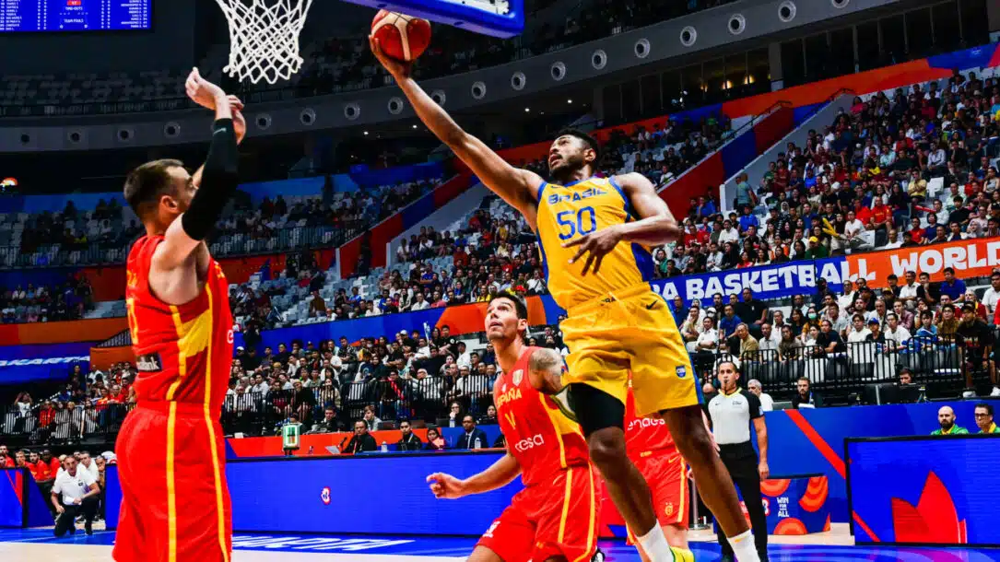

Sobre tudo que é relacionado a esportes
Tudo sobre Eportes
- Futebol
- Voleibol
- Handebol
- Natação
Tudo sobre Eportes
- Futebol
- Voleibol
- Handebol
- Natação
Em 1995 foi criado o ministerio de estado estraordinário de esporte.
O primeiro esporte foi o atletismo o jogo mais antigo tendo sido praticado desde de o inicio os jogos gregos. Os jogos iniciaram 776 a.C, os jogos tiveram continuidade até d.C ., quando o imperador Teódosio os aboliu.
Os esportes são todas atividades físicas realizadas pelo homem e que tem objeivo de promover o fortalecimento da saúde e o equilibrio da mente e do corpo As práticas competitivas estão sujeitas a regulamentação de um entre legislador.
O esporte colabora a socialização, Formação de desenvolvimento dos indivíduos o objetivo de todas as modalidades esportivas e a superação dos adversários em absoluto respeito as regras.
Os esportes podem ser praticados de forma individual coletiva, profissionalmente, de maneira reativa ou para melhoria da saúde.
O futebol moderno surgiu na inglaterra durante o seculo XIX, mas relatos históricos apontam que já existiam praticas esportivas parecidas. Atualmente, grandes competições de futebol são organizadas todos anos, é uma forma de transmitir uma enegia quem gosta do esporte.
Volei cada time é composto por 6 jogadores em quadra e 6 jogadores reservas. Após o saque, cada time poderá tocar na bola só tres vezes, sendo proibido que um jogador toque a bola duas vezes seguidas.A quadra de volei é dividida ao meio por uma rede.
Cada equipe pode ocupar apenas o seu lado da quadra, Uma partida de volei pode ter até 5 sets. Não existe tempo predefinido para cada set.
Existe várias modalidades de esportes radicais para quem deseja arriscar uma atividade nova, como os vistos: asa delta,bicicross/BMX, motocross,balonismo,surfe paraquedismo,rafting,mountain biking,escalada,trekking,mergulho,parapente e skate.
O handebol é um esporte coletivo que emvolve duas equipes com o objetivo de vencer uma á outra equipe. A equipe vencedora é aquela que marcar o maior número de fazergols na baliza adversária. No handebol a bola é jogada com as mãos, por meio de acões de passes e lançamentos.
Alguns historiadores afirmam que as primeiras manifestações esportivas aconteceram na Grécia Antiga, enquanto outros acreditam que, antes que o esporte se tornasse uma atividade comun, os guerreiros divertiam-se com a cabeça de um dos vencidos na guerra, e esse hábito grotesco evoluiu para práticas esportivas.
Basquete o jogo teve origem em dezembro de 1891 e foi uma criação do professor de edução fisica James Naimith. O fim do ano é o período de inverno no hemisfério norte e costuma ser bastante rigoroso. Nesse contexto, o inventor do basquete trabalhava no Springfield College, em Massachusetts, nos Estados Unidos.
Chamado pelos franceses de “jeu de paume” (jogo da palma), os monges o disputavam em ambientes fechados, que foram os primeiros registros do surgimento do tênis de quadra. Ali, o objetivo dos jogadores era arremessar a bola contra a parede e rebatê-la. Ou seja, bem parecido com o que hoje conhecemos como squash.
Como surgiu esse esporte? O futsal é um esporte que teve sua origem em 1934, no Uruguai. O seu criador foi Juan Carlos Ceriani, que observou que a maioria das crianças jogava futebol em campos de outros esportes, que eram mais reduzidos, devido a não conseguirem encontrar um campo de futebol.
